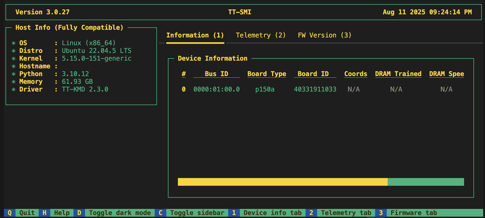

Installing Tenstorrent Software
This guide takes you from a fresh Tenstorrent system to one that is ready to run models. You will install the Tenstorrent CLI, tt, use it to update your system to the latest stable Tenstorrent software, and confirm your hardware is visible.
tt is the primary interface for operating your Tenstorrent hardware. If you want to develop against Tenstorrent’s open-source repositories instead, start with TT-Metalium™, TT-NN™, or TT-Forge™.
Before You Begin
Note
Setting up your new TT-QuietBox® 2? Follow the Setup Guide.
Before you begin, ensure your host machine meets the following prerequisites:
The host machine has an internet connection.
ttdownloads packages from PyPI and GitHub, the Tenstorrent package repositories, and model weights from the Hugging Face Hub.The host machine has a supported operating system installed (see below).
You have administrator (
sudo) privileges on the host machine. The driver, firmware tooling, and HugePages configuration are installed as root.The system is physically unboxed and set up according to your product’s installation manual and safety guidelines.
Supported Operating Systems
Tenstorrent recommends Ubuntu LTS for all Tenstorrent software.
Operating system |
Status |
|---|---|
Ubuntu 22.04 LTS, Ubuntu 24.04 LTS |
Supported |
Other Linux distributions |
Untested and considered experimental |
macOS, Windows, WSL |
Not supported. There is no driver, so nothing hardware-related works |
BIOS Requirements
The BIOS for your host motherboard should configure the PCIe AER Reporting Mechanism to be set to OS First. Tenstorrent’s TT-SMI software requires this setting to function properly.
Important
If you are using a TT-QuietBox, you do not have to worry about setting this option. It is set to OS First by default.
If you update or reset your BIOS for any reason, you must reconfigure the PCIe AER Reporting Mechanism setting to OS First to ensure TT-SMI functions correctly. This setting is typically located in the Motherboard Information section of your BIOS.
Install the Tenstorrent CLI Dependencies
The Tenstorrent CLI, tt, is a Python application. It needs Python 3.10 or newer with the venv module, plus git and curl. Install them with your system package manager. On Ubuntu:
sudo apt update && sudo apt install -y python3 python3-venv python3-pip git curl ca-certificates
tt must live in its own isolated Python environment so that it can safely update itself later. Tenstorrent recommends uv to manage that environment. Follow the setup instructions at https://docs.astral.sh/uv/ to install uv, then open a new terminal or source your shell configuration file (source ~/.bashrc for bash) so that uv is on your PATH.
Note
If you already use pipx, it works too. Install tt with pipx install tenstorrent in the next step instead of the uv command. Other installation options are described in the tt-cli developer notes.
Step 1: Install the Tenstorrent CLI
Note
If you’re starting with a fresh TT-QuietBox® 2, we automatically install the Tenstorrent CLI for you. To check, run tt --version in your terminal. If you get a response, move to Step 2 below.
Install tt as a uv tool and make sure it is on your PATH:
uv tool install tenstorrent
uv tool update-shell
Open a new terminal or source your shell configuration file again, then confirm tt runs:
tt --version
The first time you run tt in a terminal it asks once whether you want to share anonymous usage telemetry. Please consider saying yes. Telemetry tells Tenstorrent which commands people use, how long they take, and which ones fail, and that is what guides what gets fixed and built next. It is strictly opt-in and records no prompts, file paths, hostnames, usernames, or IP addresses. You can see exactly what would be sent before you decide: set TT_TELEMETRY_LOG_FILE=/tmp/tt-events.jsonl on any command and read the file, which works without opting in and uploads nothing. You can change your answer at any time with tt config set telemetry.enabled true or false. The telemetry policy lists everything that is collected.
Run tt to see the command groups. The ones used in this guide are update and device; model, serve, and launch take over once the stack is installed.
Step 2: Install the Software Stack with tt update
Tenstorrent’s system software stack consists of several components that are regularly tested together to ensure stability: device firmware, the kernel-mode driver (TT-KMD), HugePages configuration, TT-SMI, TT-Flash, and a container runtime for serving models. tt update brings your system up to the latest stable, tested combination of those components in one command. On a fresh machine it installs everything. On a machine that already has Tenstorrent software it changes only what is out of date, so you can rerun it at any time.
tt update
tt update installs the Tenstorrent tools into isolated environments under ~/.local/share/tenstorrent/, where they cannot conflict with your own Python environment, then runs the matching tt-installer release non-interactively to install the driver, firmware, HugePages configuration, and Docker if no container runtime is present.
Required
Using sudo is required, so you must enter your user’s password when prompted.
tt update also asks you to confirm before it flashes firmware, because flashing resets the devices. Stop any running model workloads first, then answer y.
On a TT-QuietBox 2 with a fast connection the whole update takes a few minutes.
Bring tt itself up to date
The installer that tt update runs also installs the tt release that was tested with that set of components, which can be older than the one you installed in Step 1. This page documents the latest release, so before you move on, put tt back on it:
tt self update
Keep both halves current over time: tt update for the system software and tools, and tt self update for tt itself. tt checks for a newer release once a day and prints a notice when one is available.
Reboot after the first install
tt update never reboots your machine for you. If this is the first time the driver was installed on this machine, or HugePages configuration changed, reboot now before continuing:
sudo reboot
If tt update installed Docker, it also adds your user to the docker group. That takes effect when you log in again, which the reboot takes care of.
Step 3: Verify Your Hardware
After rebooting, confirm the driver is loaded and that every Tenstorrent device in your system is visible:
tt device status
You should see one row per chip, with the board type, PCIe bus address, and live telemetry. The Board column tells you which generation you have: p100, p150, and p300 boards are Blackhole; n150 and n300 boards are Wormhole. A few later steps apply to one generation only and say so. Here is an example from a TT-QuietBox 2 with four Blackhole p300 cards:
Tenstorrent devices (driver: TT-KMD 2.11.0)
┏━━━┳━━━━━━━┳━━━━━━━━━━━━━━┳━━━━━━━━━┳━━━━━━━━┳━━━━━━━━━━━┳━━━━━━━━━┳━━━━━━┓
┃ # ┃ Board ┃ Bus ID ┃ Temp ┃ Power ┃ AIClk ┃ Voltage ┃ DRAM ┃
┡━━━╇━━━━━━━╇━━━━━━━━━━━━━━╇━━━━━━━━━╇━━━━━━━━╇━━━━━━━━━━━╇━━━━━━━━━╇━━━━━━┩
│ 0 │ p300c │ 0000:01:00.0 │ 43.9 °C │ 31.0 W │ 800.0 MHz │ 0.71 V │ True │
│ 1 │ p300c │ 0000:02:00.0 │ 44.4 °C │ 17.0 W │ 800.0 MHz │ 0.71 V │ True │
│ 2 │ p300c │ 0000:03:00.0 │ 43.6 °C │ 16.0 W │ 800.0 MHz │ 0.72 V │ True │
│ 3 │ p300c │ 0000:04:00.0 │ 45.1 °C │ 16.0 W │ 800.0 MHz │ 0.72 V │ True │
└───┴───────┴──────────────┴─────────┴────────┴───────────┴─────────┴──────┘
A Wormhole n300 card carries two chips and shows two rows, n300 L with the card’s PCIe bus address and n300 R with N/A, because the second chip is reached through the first. A TT-LoudBox or Wormhole TT-QuietBox with four n300 cards therefore shows eight rows:
Tenstorrent devices (driver: TT-KMD 2.11.0)
┏━━━┳━━━━━━━━┳━━━━━━━━━━━━━━┳━━━━━━━━━┳━━━━━━━━┳━━━━━━━━━━━━┳━━━━━━━━━┳━━━━━━┓
┃ # ┃ Board ┃ Bus ID ┃ Temp ┃ Power ┃ AIClk ┃ Voltage ┃ DRAM ┃
┡━━━╇━━━━━━━━╇━━━━━━━━━━━━━━╇━━━━━━━━━╇━━━━━━━━╇━━━━━━━━━━━━╇━━━━━━━━━╇━━━━━━┩
│ 0 │ n300 L │ 0000:31:00.0 │ 45.9 °C │ 28.0 W │ 1000.0 MHz │ 0.89 V │ True │
│ 1 │ n300 L │ 0000:4b:00.0 │ 44.8 °C │ 27.0 W │ 1000.0 MHz │ 0.88 V │ True │
│ 2 │ n300 L │ 0000:b1:00.0 │ 44.4 °C │ 29.0 W │ 1000.0 MHz │ 0.9 V │ True │
│ 3 │ n300 L │ 0000:ca:00.0 │ 43.1 °C │ 29.0 W │ 1000.0 MHz │ 0.9 V │ True │
│ 4 │ n300 R │ N/A │ 37.5 °C │ 24.0 W │ 1000.0 MHz │ 0.87 V │ True │
│ 5 │ n300 R │ N/A │ 36.4 °C │ 20.0 W │ 1000.0 MHz │ 0.91 V │ True │
│ 6 │ n300 R │ N/A │ 37.4 °C │ 24.0 W │ 1000.0 MHz │ 0.91 V │ True │
│ 7 │ n300 R │ N/A │ 36.1 °C │ 23.0 W │ 1000.0 MHz │ 0.9 V │ True │
└───┴────────┴──────────────┴─────────┴────────┴────────────┴─────────┴──────┘
The number of rows should match the number of Tenstorrent chips installed in your system: one per Blackhole card, two per n300 card. For more detail on a device, such as its firmware versions and board ID, run tt device info. For a live, interactive view, run tt smi, which hands your terminal to the TT-SMI interface. Press Q to leave it.
Here is an example of the TT-SMI interface for a system containing a single p150a device:

Important
If the number of listed devices does not match what you expect, see Troubleshooting below. If the problem persists, contact support and we will assist you.
Congratulations, your system software is installed and your hardware is ready to use.
Step 4 (Wormhole only): Configure the Mesh Topology
Skip this step on Blackhole systems and on single-card Wormhole systems.
A Wormhole TT-LoudBox or TT-QuietBox connects its n300 cards to each other over Ethernet, and the models in the catalog expect those links to form a mesh. tt update installs the driver and firmware but does not configure the mesh, and a system can arrive, or come back from a firmware update, with the chips Isolated. Check first:
tt-topology -ls
If it reports Mesh, continue to the next page. If it reports Isolated, or the command is not found, run the script below once. It installs TT-Topology into a temporary environment, resets every chip, and writes the mesh configuration. It needs no sudo, takes about two minutes, and ends with “Completed reset on 8 chips” on a four-card system.
TMP_DIR=$(mktemp -d); (trap 'echo "---"; echo "Cleaning up..."; if type deactivate &>/dev/null; then deactivate; fi; echo "Removing temporary directory: $TMP_DIR"; rm -rf "$TMP_DIR"; cd; echo "Cleanup complete."' EXIT; trap 'echo -e "\033[0;31m!!! ERROR: Failed to configure mesh topology\033[0m"' ERR; set -e; cd "$TMP_DIR"; echo "Working in temporary directory: $TMP_DIR"; echo "---"; echo "Creating Python virtual environment..."; python3 -m venv tt-topology-venv; source tt-topology-venv/bin/activate; echo "Virtual environment activated."; echo "---"; echo "Installing tt-topology from git..."; pip install --quiet git+https://github.com/tenstorrent/tt-topology.git; echo "tt-topology installed."; echo "---"; echo "Running tt-topology command. This may take a moment..."; tt-topology -l mesh; echo "---"; echo "Script finished successfully.";)
Run tt-topology -ls again and confirm Mesh. Serving a model without this step stops at system validation with ModelSpec requires SystemTopology.MESH, detected ISOLATED.
Troubleshooting
tt device status reports no devices
If tt device status exits with a message that the driver may not be installed or no card is seated:
If you have not rebooted since
tt updateinstalled the driver, reboot now.Run
lspci -d 1e52:to check whether the card has enumerated on the PCIe bus. If it returns nothing, the host cannot see the card at all. Each Blackhole card and each n150 card appears once; an n300 card also appears once, because its second chip has no PCIe address of its own.For Blackhole PCIe products such as p100 and p150, verify the card is being supplied power by checking that the fan spins and the green power LED illuminates when the system boots. If the light is on, try resetting the card with
tt device reset.Confirm the BIOS setting described in BIOS Requirements.
Docker commands are refused with a permission error
tt talks to Docker as your user, never through sudo. If tt update just installed Docker, log out and back in (or reboot) so that your membership in the docker group takes effect. If Docker was already installed before you ran tt update, the installer leaves it as it found it and does not add you to the group. Add yourself, then log out and back in:
sudo usermod -aG docker $USER
You can check with docker run hello-world.
Getting help
tt report bundle collects a redacted support bundle with your environment details, a TT-SMI snapshot, and recent logs, and opens a prefilled email to Tenstorrent support with it attached. tt report issue opens a prefilled GitHub issue on the tt-cli repository.
Alternative Installation Methods
tt update is the recommended way to install the system software, and it runs tt-installer for you with the tested versions. If you prefer to drive tt-installer interactively yourself and choose each of its options, you can run it directly:
/bin/bash -c "$(curl -fsSL https://tenstorrent.ai/install.sh)"
For advanced users or developers who prefer to install and configure each component by hand, refer to the manual software installation guide.
What’s Next
With the software stack installed, tt takes you the rest of the way to a running model. tt model list shows the models validated for the hardware it detected, and tt model info <model> reports the disk space, host memory, and validation status of each one. Catalog models download their weights from the Hugging Face Hub, so log in once with tt model login; gated models such as Llama and Gemma also require accepting the license on the model’s Hub page first. tt serve <model> then installs TT-Inference-Server, downloads the weights, and starts an OpenAI-compatible endpoint on port 20000, and tt model curl "<prompt>" sends it a first request. The first serve of a model downloads and compiles a lot, so expect it to take a while; later serves are much faster.
An endpoint is the foundation; tt launch puts an application on top of it. tt launch openwebui starts a chat interface in your browser, and tt launch list shows the other web UIs and terminal coding agents available on your machine. If you prefer a point-and-click experience, tt serve <model> --studio starts the model inside TT-Studio, a web application that serves models and gives you a browser interface for them in one place. The Serve Models guide walks through all of this in detail. Run tt at any time to see the command groups, and tt <command> --help for the options of each.
Where to Go Next
You now have the full stack installed. From here, pick the part of the stack that matches what you want to build:
Serve more kinds of models by following the Serve Models guide: choosing a model for your hardware, serving LLMs, diffusion, speech, and vision models from the CLI, and running the same models through TT-Studio’s web interface.
Deploy LLMs in production by following Serve in Production, which runs a vLLM endpoint directly from TT-Inference-Server, the serving engine behind
tt serve.Monitor your hardware with
tt smifor a status snapshot, or TT-Toplike for a live view of power, temperature, and core activity while a model serves requests.Use a web interface with TT-Studio, started through
tt serve <model> --studio.Understand the software stack, including how TT-Forge™, TT-NN™, and TT-Metalium™ relate to each other, in Building with Tenstorrent Software.
Compile your own PyTorch, JAX, or ONNX models with TT-Forge™.
Run and build models in Python with TT-NN™, or write custom kernels with TT-Metalium™.
tt updatealso installed att-metaliumcommand that opens a shell inside the TT-Metalium container, with your home directory mounted and TT-NN ready to import; the image, about 4.5 GB, is pulled the first time you run it. Start with the Metalium guide to learn about the architecture.Learn by building with the hands-on lessons in the TT VS Code Toolkit.
Need Additional Support?
If you encounter any issues, or have a question that isn’t covered in the documentation, please raise a support request. Our team will review your request and provide assistance.